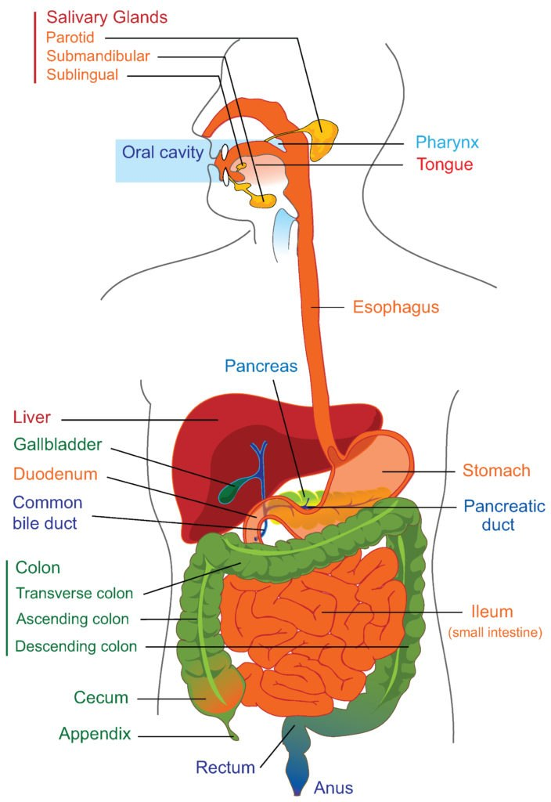
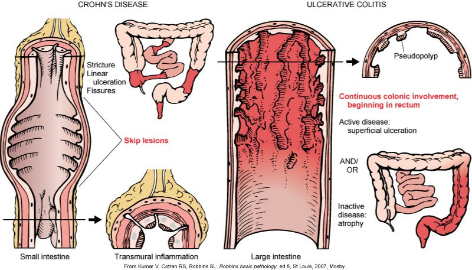
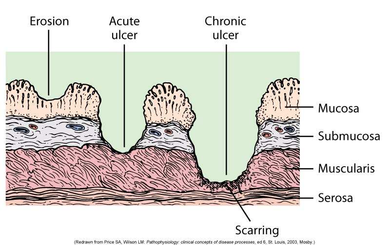
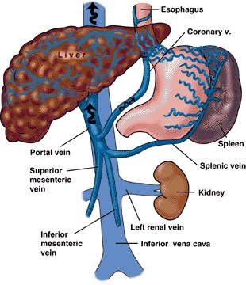
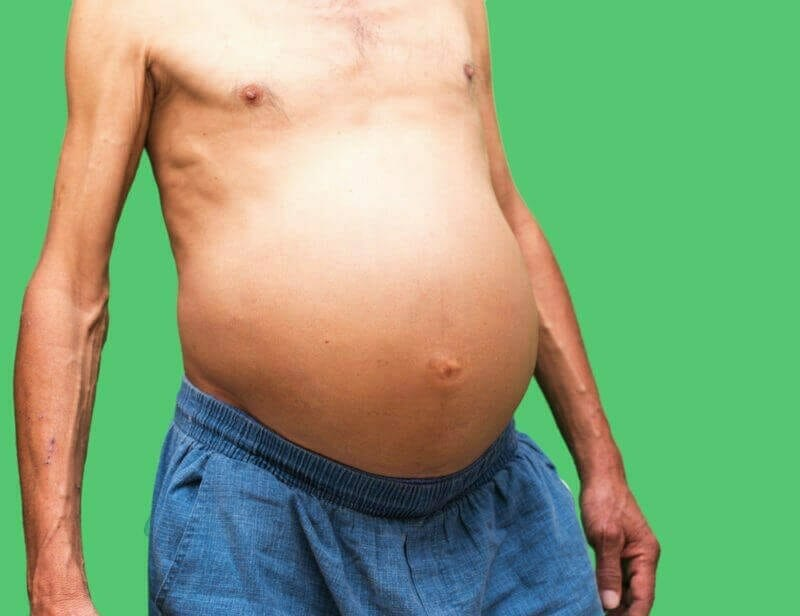
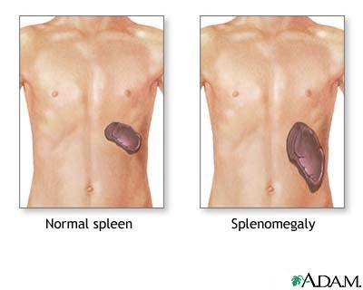
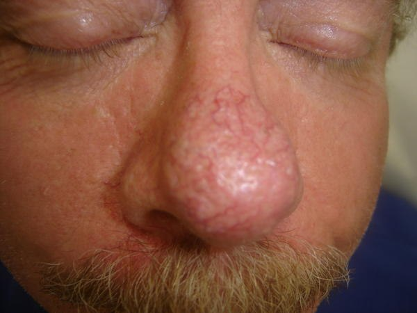
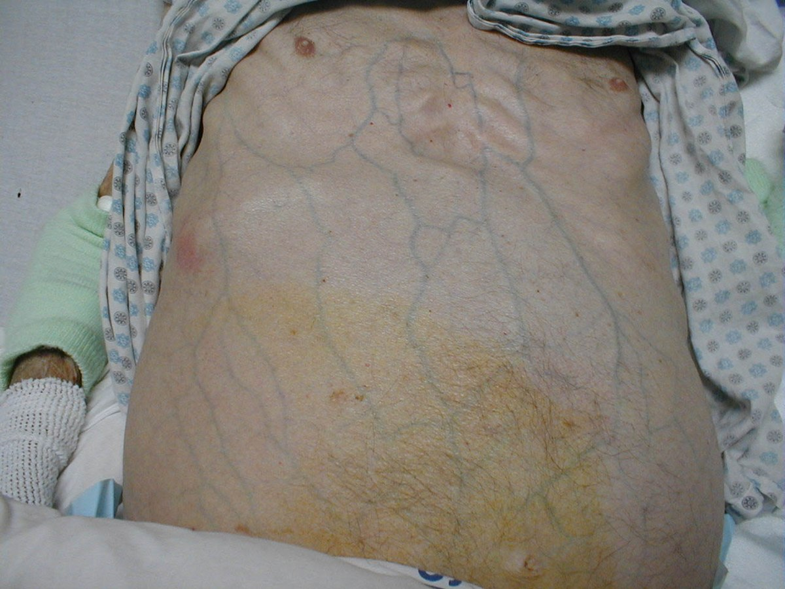
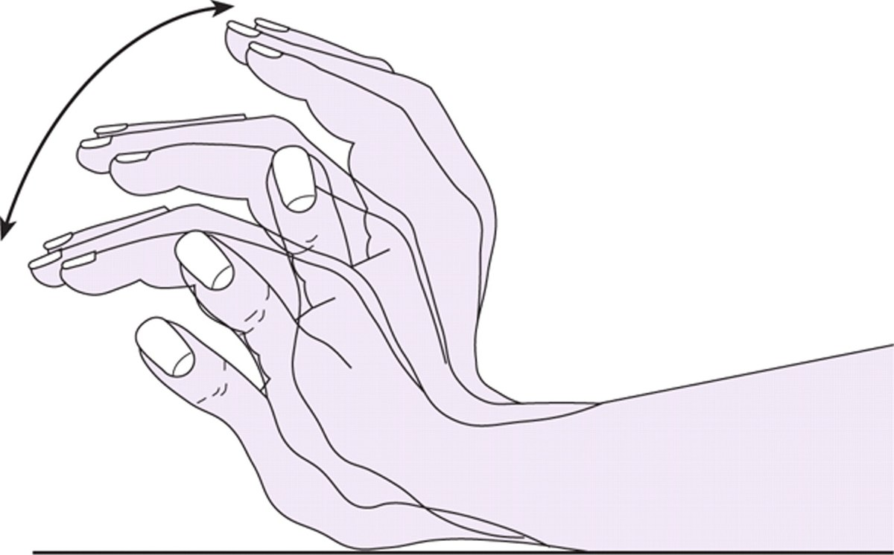

Review · Topic 11
GI
GI Anatomy and Physiology
For further study, see Fundamentals II Week 3 – Nutrition.
The Path Through the GI Tract
- Esophagus, then the esophageal sphincter.
- Stomach: a very acidic environment.
- Pyloric sphincter.
- Small intestine: duodenum, jejunum, ileum. The duodenum sits just past the pyloric sphincter, the ileum just before the large intestine. Nutrients are absorbed here.
- Large intestine (colon): ascending, transverse, descending, sigmoid. Water is reabsorbed here, not nutrients.
- Rectum, then anus.
| Part | What It Does |
|---|---|
| Esophagus |
|
| Stomach |
|
| Small intestine |
|
| Large intestine |
|
| Liver |
|
| Gallbladder |
|
| Pancreas |
|
What the liver does is taught in Hepatic Failure

Inflammatory Bowel Disease
For further study, see Med Surg I Week 6 – Inflammatory Bowel Disease.
Crohn's Disease
- Where: anywhere from mouth to anus. Most often the terminal ileum and the colon.
- Pattern: skip lesions, irregular. Deep ulcerations with a cobblestone appearance.
- Depth: transmural.
- Rectal bleeding: sometimes.
- Malabsorption and nutritional deficiencies: common. More of a small intestine disease.
- Complications: perianal abscesses and fistulas, strictures, perforation: the inflammation involves the entire bowel wall.
- Cancer risk: increased for small intestinal cancer. Colorectal too, but less than with ulcerative colitis.
- Surgery: for complications such as a stricture.
Ulcerative Colitis
- Where: the large intestine only. Starts in the rectum and spreads up the colon.
- Pattern: uniform and continuous.
- Depth: submucosa or mucosa. Not as deep.
- Rectal bleeding: common.
- Malabsorption and nutritional deficiencies: minimal. The colon absorbs water, not nutrients.
- Complications: perforation, from toxic megacolon.
- Cancer risk: increased colorectal cancer after 10 years of disease.
- Surgery: curative. With the colon out, the disease is gone.

Goals of Treatment in a Flare
- Rest the bowel: NPO, with IV fluids to hydrate.
- Control the inflammation, with medication.
- Combat infection, if any.
- Correct malnutrition: severe disease often leaves the patient exceptionally malnourished.
- Alleviate stress: stress makes it worse.
- Relieve symptoms and improve quality of life, with drug therapy.
Irritable Bowel Syndrome
Irritable Bowel Syndrome (IBS)
- A functional bowel disorder: chronic abdominal pain with a change in bowel habits, and no visible inflammation or damage to the bowel.
- Not IBD: no inflammation, ulceration or bleeding, and no added risk of colon cancer.
- Types, by the main stool pattern: constipation (IBS-C), diarrhea (IBS-D), or mixed (IBS-M).
- Signs: cramping abdominal pain, often eased by a bowel movement. Bloating, gas, mucus in the stool. Often triggered by certain foods or stress.
- Red flags point elsewhere, such as to IBD or cancer: rectal bleeding, weight loss, anemia, fever, onset after age 50.
- Managed with diet changes, stress management, and drugs for the main symptom.
Peptic Ulcer Disease
For further study, see Med Surg I Week 6 – Peptic Ulcer Disease.
Peptic ulcer disease (PUD): erosion of the GI mucosa from the digestive action of hydrochloric acid and pepsin.
Causes of PUD
- H. pylori: triggers inflammation.
- Drugs: NSAIDs above all, such as ibuprofen and naproxen.
- H. pylori with NSAIDs: double trouble, a greater risk of an ulcer.
- Also: alcohol, smoking, family history.
- Stress aggravates an existing ulcer. Not shown to cause one.
| Ulcer | What to Know |
|---|---|
| Gastric | Most often in the antrum of the stomach. |
| Duodenal | Just past the pyloric sphincter. 80% of ulcers. 90 to 95% have H. pylori. |
| Acute | Through fewer layers of the wall. Short duration: resolves quickly. |
| Chronic | 4 times more common. Deeper, more severe and long-term. |

Diagnosing PUD
- EGD: the most accurate diagnostic procedure.
- H. pylori, non-invasive: a urea breath test and a stool test. Urea is a byproduct of the bacteria's metabolism.
- H. pylori, invasive: biopsy of the antral mucosa, tested for urease. The gold standard.
- CBC: the H&H, for anemia. Is it bleeding, or has it been?
- Stool for occult blood. See Upper GI Bleed below.
Complications of PUD
- HOP: Hemorrhage, Obstruction, Perforation.
| Complication | What to Know |
|---|---|
| Hemorrhage |
|
| Obstruction |
|
| Perforation |
|
Collaborative Care for PUD
- Adequate rest: lowers the stress response.
- Smoking cessation.
- Diet: no special diet. Individualized.
- Stop aspirin and NSAIDs for 4 to 6 weeks. If aspirin must continue, give it with a PPI.
- Drugs, a vital part of treatment: antibiotics if H. pylori, a PPI (omeprazole, esomeprazole), and sucralfate, a cytoprotective agent.
Upper GI Bleed
For further study, see Med Surg I Week 6 – Upper Gastrointestinal Bleed.
An upper GI bleed's onset: slow and insidious, or sudden.
| Sign | What It Means |
|---|---|
| Bright red hematemesis | Blood in the vomit, seen with the naked eye ("frank" or "gross"): a recent or ongoing bleed. |
| Coffee-ground hematemesis | The blood has been partly digested: an older bleed, or a significant bleed has stopped. Very malodorous. |
| Melena | Black, tarry, malodorous stool: a transit time over 8 hours. Helps the provider find where the bleed began. |
| Occult blood | Not apparent by appearance. Found by a positive guaiac test, never an expected finding. |
Causes of an Upper GI Bleed
- Stomach and duodenal ulcers: about 50% of upper GI bleeds. H. pylori and NSAIDs are the two most common causes of a bleeding ulcer.
- Drug-induced ulcers: NSAIDs, salicylates such as aspirin, steroids. Many are over the counter.
- Stress-related mucosal disorder (SRMD): a mucosal injury in 70 to 90% of ICU patients. So ICU patients are typically on a PPI, IV pantoprazole.
- Esophageal varices, from portal hypertension. See Liver Failure below.
| Intervention | What to Know |
|---|---|
| Vital signs |
|
| Signs of hypovolemia |
|
| Abdomen |
|
| Labs |
|
| IV access |
|
| NG lavage |
|
| Emesis and stool |
|
| Endoscopy |
|
Assessing and managing a GI bleed in the ICU is taught in GI Critical Care Issues
Chronic Pancreatitis
For further study, see Med Surg I Week 7 – Pancreatitis.
Chronic pancreatitis: progressive and destructive, with remissions and flares. Caused by inflammation and fibrosis of the pancreatic tissue.
Signs of Chronic Pancreatitis
- Intense abdominal pain. Less tenderness than in acute pancreatitis.
- A mass: suspect a pseudocyst, or an abscess within the pancreas that needs prompt surgical drainage.
- Ascites, with respiratory compromise from it.
- Steatorrhea: the pancreatic enzymes are not working.
- Dark urine: from increased bilirubin. The whole hepatobiliary tree is interconnected.
| Care | What to Know |
|---|---|
| Pain |
|
| Pancreatic enzyme replacement therapy (PERT) |
|
| Giving the enzymes |
|
| Nutrition |
|
| Preventing exacerbations |
|
Acute pancreatitis, the kind that lands a patient in the ICU, is taught in Acute Pancreatitis
Liver Failure: Cirrhosis
For further study, see Med Surg I Week 7 – Cirrhosis.
What Is Going On in the Liver
Early Cirrhosis
- Insidious onset.
- Weight loss and weakness.
- GI disturbances: anorexia, nausea and vomiting, flatulence, a change in bowel habits.
- Hepatomegaly, with RUQ pain and a palpable liver.
Late Cirrhosis
- Jaundice: often the first sign.
- Low albumin, a protein the liver makes. Albumin has pulling power: without it, fluid shifts out of the vessels into the interstitium. Third spacing, and ascites.
- Low prothrombin, a protein the liver makes and a precursor in the clotting cascade. Bleeding times increase, and so does the risk of bleeding.
- Portal hypertension and its complications: see below.
- Hepatic encephalopathy, with asterixis: see below.
Portal Hypertension and Its Complications
Portal hypertension: the blood coming into the liver through the portal system backs up, from congestion in the cirrhotic liver, as in heart failure. The pressure in the portal area rises, and the backed-up fluid engorges vessels.

| Complication | What to Know |
|---|---|
| Ascites |
|
| Splenomegaly |
|
| Spider angiomas and caput medusae |
|
| Esophageal and anorectal varices |
|




Portal hypertension's effect on cardiac output is taught in Hepatic Failure
Treating bleeding varices is taught in GI Critical Care Issues
Bleeding precautions, for a patient with varices, are taught in the Hematology review
Managing Ascites
| Measure | What to Know |
|---|---|
| Abdominal girth |
|
| Sodium and fluid restriction |
|
| Diuretics |
|
| Paracentesis |
|
| TIPS (transjugular intrahepatic portosystemic shunt) |
|
| IV albumin |
|
Hepatic Encephalopathy
For further study, see Med Surg I Week 7 – Cirrhosis.
What Causes Hepatic Encephalopathy
- A reversible neuropsychiatric manifestation of impaired liver function.
- Primarily too much serum ammonia. Most ammonia forms when bacteria in the intestines break down protein.
- A working liver converts ammonia to urea, excreted in the urine. A failing liver does not.
- Ammonia crosses the blood-brain barrier: a CNS depressant, with a sedative effect.
What Rising Ammonia Does
- Consciousness: slowed responses and confusion, then lethargy, semi-stupor, and hepatic coma.
- Intellect: confusion, loss of place, inability to compute, loss of self, then no intellect.
- Personality: depression, irritability, decreased inhibitions, then no personality or behavior at all.
- Neuromuscular: asterixis, poor coordination, impaired handwriting, ataxia, then coma.

| Measure | Why |
|---|---|
| Protein |
|
| Control GI bleeding |
|
| Avoid constipation |
|
| Lactulose |
|
| Neuro checks and safety |
|
How Age Affects the GI System
For further study, see Fundamentals II Week 6 – Older Adults and Fundamentals II Week 4 – Bowel.
| Where | What Changes With Age |
|---|---|
| Mouth, taste and smell |
|
| Esophagus |
|
| Stomach |
|
| Intestines |
|
| Rectum and anus |
|
| Abdomen |
|
Why Older Adults Get Constipated
- Lack of muscle tone, in the bowel and the abdomen.
- Slowed peristalsis: more time for water to be reabsorbed.
- Lack of exercise, too little fluid, too little fiber.
- Too many dairy products, such as cheese.
- Medications.
Why age matters in the critically ill is taught in GI Critical Care Issues